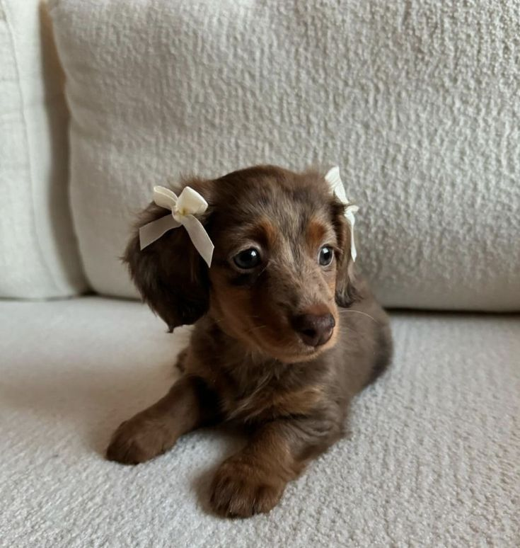

lola
Genero: femenino
Edad: 6 meses
Tamaño: 80 cm
Un sábado de lluvia, una joven llamada Elena entró al refugio. No buscaba un torbellino de energía; buscaba un alma compañera. Elena caminó por los pasillos, abrumada por el ruido, hasta que llegó a la jaula 4. Lola se levantó lentamente, se acercó a los barrotes y, en lugar de pedir comida, simplemente apoyó su hocico húmedo contra el metal, mirando fijamente a Elena. Fue un flechazo instantáneo. "Hola, Lola", susurró Elena, leyendo el cartel de la jaula. "Parece que ambas buscamos un poco de paz". La cuidadora del refugio sonrió al ver la escena. "Es la perra más buena del mundo", dijo. "Solo necesita que alguien le dé la oportunidad".
Salud: Su estado de salud general es fuerte y se encuentra esterilizada, microchipada y con todas sus vacunas al día. Actualmente mantiene un peso ideal de 14 kg y solo presenta una leve alergia estacional en la piel durante la primavera, la cual se controla fácilmente limpiándola después de salir al parque. Con una alimentación balanceada y juguetes masticables para cuidar el ligero sarro de sus dientes, Lola está lista para disfrutar de una vida larga y activa.
Comportamiento: Lola es una perrita de cinco años sumamente tranquila, observadora y silenciosa. En el hogar se comporta de forma excelente: le encanta acompañar a su dueño de habitación en habitación sin invadir su espacio, no da tirones al pasear con la correa y convive pacíficamente con otros animales. Aunque es un poco tímida con los extraños al principio y se asusta con los ruidos de los camiones grandes, basta una caricia suave para ganarse su total confianza y lealtad